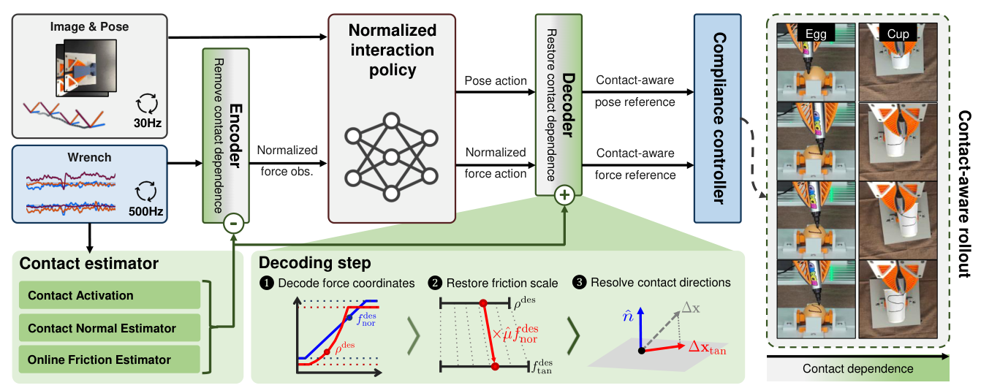
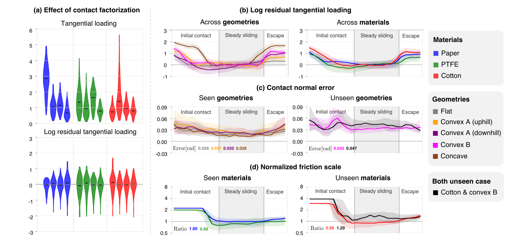

FACEContact-Aware Imitation Learning
Through Contact Factorization
Abstract
Generalizable contact-rich manipulation requires robots to preserve intended task behavior while adapting its physical realization to changing contact conditions. However, interaction forces can vary substantially with small changes in surface geometry, orientation, and friction, making policies trained directly on raw force measurements difficult to transfer beyond demonstrated conditions. We introduce FACE, a contact-factorized imitation learning framework that separates intended task behavior from environment-dependent contact factors. Our representation expresses interaction forces in normalized, contact-relative coordinates, while a learned contact-normal estimator and an online friction estimator infer the local contact normal and effective friction scale. Together, these estimators enable force observations to be encoded and policy outputs to be decoded into physical motion and force commands during execution. In this way, FACE adapts execution to current contact conditions while preserving the intended task behavior, without updating the policy parameters. We evaluate FACE on real-robot contact-rich manipulation under unseen variations in surface properties and geometry, demonstrating robust generalization across contact conditions through controlled comparisons with variants that adapt prior approaches to our setting.
Key Results
Nominal surface
Vertically wrinkled
Horizontally wrinkled
PVC tape
Plastic shell
Wet plastic shell
How FACE works
Separating the demonstrated behavior from the contact factors lets execution adapt to the current contact while the policy stays fixed. The estimated contact normal and friction scale turn its normalized outputs into motion and force commands.

Contact factorization & reparameterization
Observations and actions express forces in the local contact frame, with normal loading relative to an operating bound and tangential loading relative to friction-scaled normal loading. Outputs of the fixed policy are decoded into force commands and tangent-plane motion.
Online contact estimation
A force-based contact activation detects contact, a learned estimator infers the local contact normal from recent motion and wrench history, and a scalar Kalman filter tracks the effective friction scale during sliding. Each committed action is re-decoded with the latest estimates, without further policy inference.
Hybrid compliance control
A velocity-based hybrid position-force controller executes the decoded references. It regulates normal force by feedback along the estimated normal, applies tangential force as a feedforward term, and tracks the commanded motion.
Experiments
Paper cup marking
With one fixed policy, FACE adapts to unseen friction and geometry. On paper cups whose surface friction or shape differs from the demonstrated cup, it keeps marking an “S”, while variants with the same data and backbone fall short.
Nominal surface
FACE (ours)
Vision only
Force as observation
Direct force
Analytic normal
Unseen friction · Wet plastic shell
FACE (ours)
Vision only
Force as observation
Direct force
Analytic normal
Unseen geometry · Horizontally wrinkled
FACE (ours)
Vision only
Force as observation
Direct force
Analytic normal
Vision only, Direct force and Analytic normal are the paper’s Visual Observation Only, No Force-Factorization and No Learned Contact-Normal Estimation.
Egg marking
The same approach can mark eggs of unseen sizes, where the curved, brittle shell leaves little margin between losing contact and pressing too hard.
Scroll horizontally to compare all five methods.
FACE (ours)
Vision only
Force as observation
Direct force
Analytic normal
Generalization across contact conditions
Contact-aware adaptation also allows a separately trained wiping policy to carry the demonstrated wiping over to wet and soapy plates and to a plate of a different material and shape. Without force factorization, the Direct force baseline transfers poorly.
FACE (ours)
Baseline (Direct force)
Nominal surface
Wet surface
Soapy surface
Unseen material & geometry
Contact factor estimation
In controlled line-contact sliding over surfaces of known shape, the contact normal and friction scale can be estimated online, including on a material and a geometry held out from training. The factorized tangential residual stays near zero during steady sliding.

s is the horizontal travel from the initial contact (0\le s\lesssim 150 mm), and x_0 is the signed distance from the initial contact to the apex.
| Surface | h(s) [mm] | Parameters [mm] |
|---|---|---|
| Flat | 0 | |
| Convex A, uphill | \sqrt{R^2-(x_0-s)^2}-\sqrt{R^2-x_0^2} | R=540, x_0=150 |
| Convex A, downhill | \sqrt{R^2-(x_0-s)^2}-\sqrt{R^2-x_0^2} | R=540, x_0=-37.7 |
| Concave | A(e^{s/\lambda}-1) | A=8.47, \lambda=150 |
| Convex B | \sqrt{R^2-(x_0-s)^2}-\sqrt{R^2-x_0^2} | R=1043.8, x_0=253.5 |
| Normal estimator | 2-layer GRU, hidden 96 | |
| Friction estimator | Scalar Kalman, \mu_0=0.12, first update after 0.3 s sliding | |